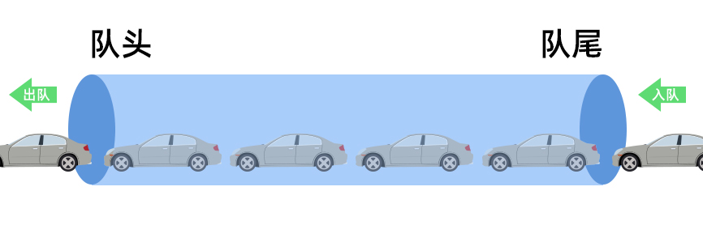
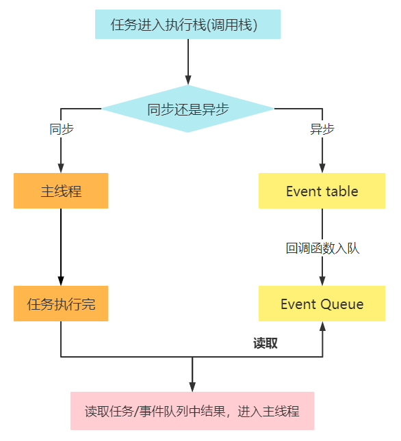
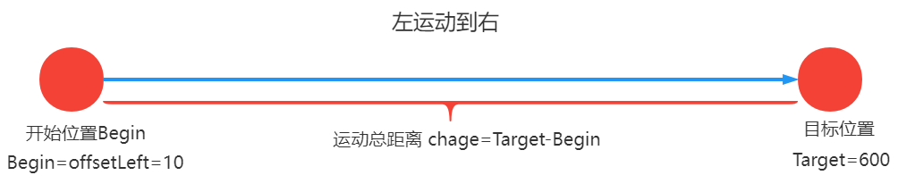

一、定时器与延时器
setInterval() 与 clearInterval()
setInterval()方法设置一个定时器，每间隔相同的一段时间，重复调用一个函数或执行一个代码片段- 清除定时器：
clearInterval()函数可以清除一个定时器
// 基本语法 var timer = setInterval(funtion, delay, arg1, arg2, arg3);
- function：这个参数是一个函数，每经过指定
delay毫秒后执行一次。第一次调用发生在delay毫秒之后。- delay：表示定时器延迟的时间，以毫秒为单位，1 秒等于 1000 毫秒
- arg1…arg3：每次定时器到指定时间，要执行 function 函数前，这些参数会被当成 function 的参数传递给 function
- timer：表示延时器的返回值，返回值是一个正整数，表示定时器的编号，这个值可以传递给
clearInterval()来取消该定时器
<button>点击结束</button> <script> //不传参数 var timer1 = setInterval(function () { console.log(1); }, 1000); //传参 var timer2 = setInterval( function (a, b) { console.log(a, b); }, 1000, 5, 10 );
//具名函数也可以传入setInterval
var a = 0;
function fun() {
console.log(++a);
}
// 具名函数当做第一个参数，注意：fun这里没有圆括号
setInterval(fun, 1000);
//直接使用一段代码代替函数，类似eval,慎用
var timer3 = setInterval(“console.log(1)”, 1000);
//取消定时器
var button = document.querySelector(“button”);
button.onclick = function () {
clearInterval(timer3);
};
//注意
var a = 0;
var timer1 = setInterval(function () {
a++;
console.log(a);
if (a === 3) {
clearInterval(timer1);
}
console.log(“ss”);
console.log(“aa”);
}, 1000);
//1 ss aa
//2 ss aa
//3 ss aa
注意：
- 取消定时器不意味着马上停止所有行为(即打印出3就退出去)
- 它会把这一轮进行完(后面的”ss”、”aa”会被打印出来)
- 具名函数当做第一个参数时，注意：没有圆括号
- 案例：计时器功能
- 开始按钮，暂停按钮
- 注意在每次点击开始后，先清除计算器，以避免定时器叠加（当我们不停点击开始按钮时，就能看到），但这不代表清零
<button id="start">开始</button> <div class="time"></div> <button id="pause">暂停</button> <script> var start = document.getElementById("start"); var pause = document.getElementById("pause"); var time = document.querySelector(".time"); var timer = null; //初始化计时器 var sum = 0; start.onclick = function () { //为了防止定时器叠加，应在开始前清除计时器 clearInterval(timer); timer = setInterval(function () { time.innerText = ++sum + "秒"; }, 1000); }; pause.onclick = function () { clearInterval(timer); }; </script>
setTimeout() 与 clearTimeout()
setTimeout()方法设置一个延时器，该延时器在定时器到期后执行一个函数或指定的一段代码。clearTimeout()用来取消一个延时器注意：当指定时间到了之后，会执行函数一次，不再重复执行
- 语法
// 设置一个定时器 var timer = setTimeout(funtion, delay, arg1, arg2, arg3); // 清除一个定时器 cleartTimeout(timer);
delay：表示定时器延迟的时间，以毫秒为位，1 秒等于1000毫秒function这个参数是一个函数，当延时器延迟时间delay到期后，就会执行这个函数arg1...arg3等：附加参数，一旦定时器到期，它们会作为参数传递给function，ie不支持timer：表示延时器的返回值，返回值是一个正整数，表示定时器的编号，这个值可以传递给clearTimeout()来取消该延时器。
定时器中 this 问题
setTimout和setInterval函数中的第一个参数是一个函数，当定时器到时间执行这个函数- 这个函数中的
this默认指向window或global，不管在严格模式还是非严格模式下，this都指向windowvar obj = { name: "张三", sayHello: function () { console.log(this); // window console.log("大家好，我叫" + this.name); }, };
var timer;
timer = setInterval(function () {
console.log(this); //window
}, 1000);
timer = setInterval(obj.sayHello, 1000); //this指window
//相当于：
timer = setInterval(function () {
console.log(this); // window
console.log(“大家好，我叫” + this.name);
}, 1000); //this指window
- 修改 this 指向
- 注意：这里的方法实质上并不是真的改变了定时器的this指向，只是改变了结果
知识点：
- 在之前的学习中我们知道，
this代表的是函数的上下文对象，指向把函数当成方法调用的那个对象
方法1：包装函数来实现this
var obj = { name: "张三", sayHello: function () { console.log(this); // obj console.log("大家好，我叫" + this.name); }, }; var timer = setInterval(function () { //定时器的this仍然指向window obj.sayHello();//在函数内obj调用sayHello方法 }, 2000);//输出结果：每个两秒打印出 大家好，我叫张三方法2：利用 bind 来实现
- bind方法：
var fn2 = fn.bind(thisArg, arg1, arg2, arg3); - 改变
this指向并返回一个新函数 setInterval(obj.sayHello, 1000);this指的是window- 然而
.bind(obj)把obj.sayHello方法的this改成了obj
var obj = { name: "张三", sayHello: function () { console.log(this); console.log("大家好，我叫" + this.name); }, };setInterval(obj.sayHello.bind(obj), 1000);
- bind方法：
方法三：在外层作用域，保存 this
- 事件函数中的this指向绑定事件的那个对象
- 实现效果：点击开始按钮，1秒后，开始按钮变颜色
- 因为不一定知道按钮元素名，所以一般会写成
this.style...；但定时器函数的this指的是window，所以就会报错 - 因此，声明一个变量
that接收事件处理函数的this，在定时器内调用
<button id="start">开始</button> <script> var start = document.getElementById("start"); start.onclick = function () { //事件处理函数的this指的是start var that = this; setInterval(function () { console.log(that); // that指向start that.style.backgroundColor = "red";//改变start的背景颜色 }, 1000); }; </script>
队列
在讲接下来的同步与异步相关内容时，会涉及到队列相关知识，所以我们先来学习下队列相关内容
- 队是一种线性的数据结构，它的特点是先进先出（
First In First Out,简称FIFO），后进后出。- 队列的出口端叫作队头（
front），队列的入口端叫作队尾(rear)- 入队（
enqueue）就是把新元素放入队列中，只允许在队列的队尾放入元素- 出队（
dequeue）就是把元素移出队列，只允许在队列的队头移出元素。
单线程、同步与异步
生活的角度来举一个例子，帮助大家理解。
- 比如你现在工作是查阅合同，并归档，并且这个工作只有你一个人在做，那就属与单线程执行。
所谓单线程，站在现实角度，简单理解就是一个人干了所有活。
- 至于 JS 为什么设置成单线程的，我们后面在性能优化那节课来专门讲解。
比如，你现在的工作流程如下：
- 第一：查阅合同是否有错误，我们简称 A 事情
- 第二：如果有错误就要提交到老板处，让老板改正 我们简称 B 事情
- 第三：老板改正好之后，我们要拿回合同，然后一起归档，简称 C 事情
- 第四：可能中间还有其它同事需要我帮助等啥的，我们简称 D 事情
如果说你现在手上有 10 个文档，当你查阅到第 3 个文档时，发现文档有错误，那你现在该怎么办 ？
- 第一种情况：同步执行任务
- 把错误合同提交到老板处，让老板改正后，等老板改好，再拿回来，继续查况后面的合同。老板修改合同上的错误，肯定需要花很多时间，还要找律师啥，显然在老师改合同这个时间里，我们一直等着，后面的合同也不审，那太浪费时间了。
这种情况，就是单线的同步执行任务
- 一次只能做一件事，而且每次要等前面的事做完了，再做后面的，否则就一直等着。而自己一直空闲着，但后面还有好多事又做不了。
- 把错误合同提交到老板处，让老板改正后，等老板改好，再拿回来，继续查况后面的合同。老板修改合同上的错误，肯定需要花很多时间，还要找律师啥，显然在老师改合同这个时间里，我们一直等着，后面的合同也不审，那太浪费时间了。
JS 单线程同步执行任务
JS是属于单线程的，也就是一次只能做一件事。做了 A 就不能做 B。如果前面的 A 任务会花费大量的时间，就会导致后面的 B 任务停止执行，直到 A 执行完才会执行 B。- 如果排队是因为计算量大，CPU 忙不过来，倒也算了，但是很多时候 CPU 是闲着的，因为 IO 设备（输入输出设备）很慢（比如 Ajax 操作从网络读取数据，进行大量计算），不得不等着结果出来，再往下执行。
显示如果单线执行任务，只能同步执行的话，那是非常麻烦的。
- 第二种情况：同步与异步结合执行任务
- 每次把错误的合同提交到老板那里，让老板去改正，自己继续审下面的合同。等老板改好合同后，来通知我去拿合同时，我才会考虑去取回合同。
- 老板通知我拿合同时，如果手上的事没有忙完，则等我忙完了，再去老板那里拿回合同，一起归档，如果忙完了，那就直接去老板哪里取回合同。
- 如果我忙完了，老板还没有通知我，那我闲着没事也没关系。
这种情况，就是同步与异步混合的方式来执行任务
- 从上面这件事来看，第二种情况肯定工作效率会更高，那在我们 JS 执行代码时，他也采用的是第二种机制，同步与异步结合的方式执行代码。
为了防止主线程的不阻塞，异步方案产生
- 所有任务可以分成两种，一种是同步任务（synchronous），另一种是异步任务（asynchronous）。
就好比上面的 A、B、D 是同步任务，C 是异步任务
- 同步任务指的是： 在主线程上排队执行的任务，只有前一个任务执行完毕，才能执行后一个任务；
- 异步任务指的是： 不进入主线程、而进入**”任务队列”（task queue）的任务，只有”任务队列”通知主线程**，某个异步任务可以执行了，该任务才会进入主线程执行
- JS 中代码分为同步代码和异步代码。大部分代码是同步的，只有少许代码是异步的
JS 执行中遇到异步任务如何处理
- JS 代码在执行代码时，也是一样的，首先会将所有同步代码执行完了，再去执行异步的代码。
- 如果在执行过程中碰到了异步的代码，那 JS 就会先把他暂时放到一个任务队列中等着，等同步的代码全部执行完了再执行任务队列中的异步代码。
- 执行顺序按先插入队列的先拿出来执行。
setInterval 和 setTimeout 是两个异步语句
- 我们来分析下，下面这段代码的执行结果
console.log(1); console.log(2); setTimeout(function () { console.log("定时器1000"); }, 1000); console.log(3);setTimeout(function () {
console.log(“定时器0”);
}, 0);
console.log(4);
……// 最后执行结果 1，2，3，4 定时器0 定时器1000
- 代码从上往下执行时，碰到
setInterval()和setTimeout()异步任务时，浏览器会把这个任务放在Event Table，- 等到定时器计时一到，会把对应回调函数加入到
Event Queue事件队列中，等其它的同步代码执行完了，再去执行他们。定时器的计时不是由 JS 主线程来负责的。
- 这里就会造成定时器并不能完全按预期的延迟时间来执行代码。因为有可能定时器的等待时间是
100ms，而同步代码执行的时间要200ms，这样就会造成定时器要在200ms后才会第一次被执行。
总结
- 单线程： 一个人干了所有活，而且每次只能做一件事，JS 就是单线程的。
同步- 同步就是一件一件事情来，只有等前面的事情做完了，才会做后面的事情，如果前面的事情耗时很长，也要一直等着完成才做后面。
- 同步会阻塞后续代码的执行
异步- 异步是相同同步而言的，如果在做的过程中遇到异步的任务，就把他先放在一边，等同步的事情做完了，再去做异步的任务
- 异步不会阻塞后续代码的执行
- 异步任务一般都是非常耗时的，而且会受到外部影响。
- 异步的应用场景
- 异步任务都是基于
callback回调函数的形式来处理的，即需要异步处理的代码放在callbacak回调函数中 - 遇到异步任务，就会把对应的
callback函数，添加到任务队列中，等同步执行完，定时器时间一到，再到任务队列中取出对应的回调函数放入事件队列中，开始执行。
- 异步任务都是基于
常见的异步任务有
- 网络请求，如：ajax，图片加载
- 定时任务，如：setInterval() 和 setTimeout()
图片加载案例
- load 事件，表示图片加载成功后要触发的事件
- error 事件，表示图片加载失败后要触发的事件
console.log("同步代码1"); var img = document.createElement("img"); // 同步代码 img.src = "https://www.arryblog.com/logo.png"; // 同步代码 img.onload = function () { console.log("图片加载成功"); document.body.appendChild(img); }; // 异步回调 img.onerror = function () { console.log("图片加载失败"); }; // 异步回调 console.log("同步代码2"); //同步代码1 同步代码2 图片加载成功
定时器实现动画
- 动画的本质，就是在更改 CSS 样式
- 比如，制作一个变色的小球，就是在一定的时间内改变 div 的背景颜色
- 比如，实现一个长方形，从左边移动到右边，本质就是在不停的更改 div 的 left 值（前提 div 是一个定位元素）
我们利用定时器，在一定的时间内，更改元素身上的 CSS 属性，就能实现简单的动画效果
案例 1：实现变色小球
- 开一个定时器，间隔一定的时间，就更改下元素的背景颜色
var ball = document.querySelector(".ball"); var arrColor = [ "lightblue", "lightcoral", "lightgray", "lightseagreen", "lightpink", "skyblue", ]; var len = arrColor.length; setInterval(function () { var index = (Math.random() * len) >> 0; ball.style.backgroundColor = arrColor[index]; }, 500);案例 2：匀速运动 - 向右
当点击开始按扭时，希望小球从左边运动到右边的某个位置，然后停下来，在整个过程中小球运动要到达目的地，可以是
- 匀速运动
- 减速运动
- 限定时间（规定多长时间运动到目的）
- 我们来先看第一种：匀速运动 - 向右运动
- 匀速运动，即小球每次移动的距离是一样的，我们把每一次移动距离称为步长（step）
- 我们可以开启一个定时器，让小球每次从当前位置向右移动规定的步长
- 当小球到达目的时，暂停动画（即关闭定时器）
- 因为在小球每次到达目地的时，如果一直按开始按扭，会开启很多个定时器，小球的运动速度会越来越快
- 所以每次在开启一个新的定时器前，要关闭之前的定时器
<style> .ball { position: absolute; left: 0; top: 100px; width: 100px; height: 100px; background-color: skyblue; border-radius: 50%; } </style> <button class="start">开始</button> <div class="ball"></div> <script> var start = document.querySelector(".start"); var ball = document.querySelector(".ball"); var timer = null; //记录定时器 // 点击按扭，球开始运动 start.onclick = function () { move(ball, 10, 500, 100); }; /* move:封装运动动画 el:运动的元素 step:小球每次运动的步长 target:目的地距离 delay:表示定时器的执行时间，默认值是20ms */ function move(el, step, target, delay = 20) { // 每次开启新定时器前，把之前的定时器关闭 clearInterval(el.timer); // 定时器隔一定时间，让小球向右移动一定距离 el.timer = setInterval(function () { //将定时器绑定到元素身上 // 如果移动距离超过了目标位置，则让他运动到目标位置 var location = el.offsetLeft + step; if (location >= target) { location = target; clearInterval(el.timer);//清除下一次的定时器 } el.style.left = location + "px"; }, delay); } </script>以上方法，小球只能向右运动。如果想让小球在水平向左或向右运动，我们需要修改代码
- 案例 3：匀速水平——向左/向右
小球沿水平（向左或向右）运动的条件：判断小球的位置与目标点的距离
- 如果小球位置 < 目标点位置，则 step 为正数
- 如果小球位置 > 目标点位置，则 step 为负数
所以小球运动到目标点停止的条件就变成了： - 当前位置 >= 目标位置 && step 为正数时，停止
- 或 当前位置 <= 目标位置 && step 为负数时，停止
- 封装函数
/** * move 运动函数 指定元素以规定的步长匀速运动到目的 * @param el 需要运动的元素 * @param step 每次运动的步长（移动的距离） * @param target 运动到的目的点 * @param delay 定时器每次间隔时长，如果没有传就启用默认值20 */ function move(el, step, target, delay = 20) { // 判断目标位置与当前元素位置 if (el.offsetLeft > target) step = -step; clearInterval(el.timer); // 定时器隔一定时间，让小球向右移动一定距离 el.timer = setInterval(function () { // 如果移动距离超过了目标位置，则让他运动到目标位置 var currentLocation = el.offsetLeft + step; // 小球停止运动的条件 if ( (currentLocation >= target && step > 0) || (currentLocation <= target && step < 0) ) { currentLocation = target; clearInterval(el.timer);//清除下一次的定时器 } el.style.left = currentLocation + "px"; }, delay); }
案例 4：匀速水平——往返运动
- 使用回调函数
<button class="btn">先向左后向右</button> <div class="ball"></div> <script> var btn = document.querySelector(".btn"); var ball = document.querySelector(".ball"); var timer = null; //记录定时器 // 点击按扭，球开始运动 btn.onclick = function () { //用实参传入回调函数 move(ball, 10, 500, 50, function () { move(ball, 10, 0, 50); }); };//先左后右 btn.onclick = function () { move(ball, 10, 500, 50, function () { move(ball, 10, 0, 50, function () { move(ball, 10, 500, 50); }); }); };//先左后右再左function move(el, step, target, delay = 20, callback) {
// 判断目标位置与当前元素位置
if (el.offsetLeft > target) step = -step;
clearInterval(el.timer);
// 定时器隔一定时间，让小球向右移动一定距离
el.timer = setInterval(function () {
// 如果移动距离超过了目标位置，则让他运动到目标位置
var currentLocation = el.offsetLeft + step;
// 小球停止运动的条件
if (
(currentLocation >= target && step > 0) ||
(currentLocation <= target && step < 0)
) {
currentLocation = target;
clearInterval(el.timer);//清除下一次的定时器
//这里清理定时器，表示到头了
//判断传入类型，如果是函数，则调用，不是则什么也不做
typeof callback === “function” ? callback() : callback;
//callback instanceof Function()?callback():callback;//所有的函数都是Function的实例
}
el.style.left = currentLocation + “px”;
}, delay);
}案例 5：减速运动 - 向右
- 所谓减速运动，我们可以理解为，让一个元素从左边运动到右边，其运动的速度越来越小，到最后停止运动。
- 比如小球从左边运动到右边，其步长变化类似于： step = 10，step = 9、step = 7 … step = 1 最后到达终点，然后停止运动。
这里的难点在于，整个过程中速度的变化如何消减，从而还要实现在速度消减到最小的时候小球运动到了目地的。这里有一个简单计算每一次小球运动步长的公式
// n 是一个大于1的数，如果等于1，直接到达目地的，所以n尽可能设置大些 step = (目地的 - 当前位置) / n;
- 注意：向右减速运动时，步长是递减的，一定要向上取整
Math.ceil才能刚好停在目的地；- 因为最后的几个步长一定是小数，只有向上取整，使它等于1，每次的步长为1，才会逐步到达目的地
- 小球从最左边做减速运动运动到 500px 的位置
start.onclick = function () {<button id="start">开始</button> <div class="ball"></div> <script> var start = document.getElementById("start"); var ball = document.querySelector(".ball"); var timer = null; //初始化定时器
move(ball, 500, 50);
};
//向右减速运动
function move(el, target, delay = 20) {
// 每次开启一个新定时器前，先清除原来的
clearInterval(el.timer);
el.timer = setInterval(function () {
// 计算每次运动的步长 小数向上取正
var step = Math.ceil((target - el.offsetLeft) / 10);
// 到达目标位置，停下（即清除定时器）
if (el.offset === target) {
clearInterval(el.timer);
}
// 让小球运动起来
el.style.left = el.offsetLeft + step + “px”;
}, delay);
}
```
- 案例 6：减速运动 - 水平(向左/向右/往返)
要让小球沿水平（向左或向右）运动，那就要判断小球的位置与目标点的距离
- 如果小球位置 < 目标点位置，则 step 为正数，向上取整，才能准确到达目的地
- 如果小球位置 > 目标点位置，则 step 为负数，向下取整，才能准确到达目的地
- 向左/向右时，就把函数绑在相应的
onclick上,改变left的初始值- 往返时，就使用回调函数
<style> .ball { position: absolute; /* left: 0; */ left: 500px; top: 50px; width: 100px; height: 100px; background-color: skyblue; border-radius: 50%; } </style> <button id="left">向左</button> <button id="right">向右</button> <button id="side">往返</button> <div class="ball"></div> <script> var left = document.getElementById("left"); var right = document.getElementById("right"); var side = document.getElementById("side"); var ball = document.querySelector(".ball"); var timer = null; //初始化定时器
//向左减速运动
left.onclick = function () {
move(ball, 500, 50);
};
//向右减速运动
right.onclick = function () {
move(ball, 0, 50);
};
//往返运动
side.onclick = function () {
move2(ball, 500, 50, function () {
move2(ball, 0, 50, function () {
move2(ball, 500, 50);
});
});
};
//向左或向右运动
function move(el, target, delay = 20) {
// 每次开启一个新定时器前，先清除原来的
clearInterval(el.timer);
el.timer = setInterval(function () {
// 计算每次运动的步长 小数向上取正
var step = (target - el.offsetLeft) / 10;
// 如果step大于0，则向上取正 如果step小于0，则向下取正
step = step > 0 ? Math.ceil(step) : Math.floor(step);
// 到达目标位置，停下（即清除定时器）
if (el.offsetLeft === target) {
clearInterval(el.timer);
}
// 让小球运动起来
el.style.left = el.offsetLeft + step + “px”;
}, delay);
}
//往返运动
function move2(el, target, delay = 20, callback) {
// 每次开启一个新定时器前，先清除原来的
clearInterval(el.timer);
el.timer = setInterval(function () {
// 计算每次运动的步长 小数向上取正
var step = (target - el.offsetLeft) / 10;
// 如果step大于0，则向上取正 如果step小于0，则向下取正
step = step > 0 ? Math.ceil(step) : Math.floor(step);
// 到达目标位置，停下（即清除定时器）
if (el.offsetLeft === target) {
clearInterval(el.timer);
}
// 让小球运动起来
el.style.left = el.offsetLeft + step + “px”;
//等赋完上一轮的值之后再来调回调函数
if (el.offsetLeft === target) {
callback instanceof Function ? callback() : callback;
} }, delay);
}
- 案例 7：多属性减速运动
我们希望小球按我们指定的属性来发生变化，如果同时指定多个属性呢 ？
难点一：多个属性如何指定，传值问题。
- 我们把
target目标参数改成一个对象，用对象的形式来指定变化的属性值，如下：
target = { left: 200, top: 300, width: 300, height: 400 };- 我们把
难点二：如何控制每个属性的变化
- 可以利用
for..in循环遍历出target中的每个属性名和对应的属性值(目标值) - 然后利用
getComputedStyle()方法，获取元素当前对应属性值，与目标值对比，来控制属性变化
// for ...in 遍历target，获取对应属性名和属性值 for(var key in target){ ....}// 获取元素对应属性值
var attrValue = getStyle(el, key);
function getStyle(el, attr) {
return getComputedStyle(el, null)[attr] || 0;//0是默认值
}
//相当于 var attrValue = getComputedStyle(el)[key];- 可以利用
难点三：何时暂停定时器
- 多个属性发生变化，只有当所有属性变化值都达到目标时，才会能暂停定时器。
- 判断方法：我们设置一个
flag属性用来记录是否所有属性都达到了目标值，只要有一个没有达到flag = false,只有所有值都达到目标值时，flag = true
if (flag) { clearInterval(el.timer); }把 opacity 透明度属性融入进去
- 我们把
透明度的属性值 * 100再处理，然后保存结果时，再除以 100 - 如果用户传过来的对应属性
left，top，width，height，opacity值，带有小数，我们在比较时用整数来比较。注：传入的 opacity 只能是 1 到 100 之间的整数
/** * move 多属性运动动画 * el 运动的元素 * target 多个属性的目标值 target={width:'300px',height:'400px'} * callback 回调函数 动画结束后执行 * delay 定时器的执行间隔时间 */ function move(el, target = {}, callback, delay = 20) { // 开定时器之前，要清定时器 clearInterval(el.timer); el.timer = setInterval(function () { var flag = true; //假设所有的属性都到达目标值 // 多属性动画 // 通过for...in遍历 target对象，取得每个key和(value) // 通过key得到当前改变的属性，及属性的当前值 // 通过value得到当前改变的属性的目标值 for (var key in target) { // 要对传过来的key做一个判断，判断是不是一个opacity var attrValue = getComputedStyle(el)[key]; // 当前值 1 if (key.toLowerCase() === "opacity") { // 将值 1 或 0.4等 转换成 100或 40 attrValue = attrValue * 100; } else { attrValue = parseInt(attrValue); // 当前值 1 }var targetValue = parseInt(target[key]); // 目标值 30
// 计算运动的步长step(速度 speed)
var step = (targetValue - attrValue) / 10;
step = step > 0 ? Math.ceil(step) : Math.floor(step);// 只要有一个属性没有到达目标值，那就把flag设置为false
var currentDistance = attrValue + step;
if (currentDistance !== targetValue) {
flag = false;
}
// 赋值
if (key.toLowerCase() === “opacity”) {
el.style[key] = currentDistance / 100;
} else {
el.style[key] = currentDistance + “px”;
}
}// 清定时器,只有flage=true时
if (flag) {
clearInterval(el.timer);
// 执行回调
callback instanceof Function ? callback() : callback;
}
}, delay);
}- 我们把
- 案例 8：单个属性限定时间动画
- 限定步长的动画，是没有办法精准的把控好时间的，其运动的距离也长，耗时越长
- 如果我们要限定时间，在规定的时间内完成动画，那需要如何实现呢 ？
- 计算当前位置以控制
left的距离duration=走完全程所需要的时间（s）begin=开始位置=el.offsetLeftchange=总距离=target(目标位置)-begin(开始位置)- 速度=总距离/总时间=
change/durationtime(已经走了多久)：定时器次数*延迟时间currentDistance(当前位置)=left=起始位置+所用时间*速度=begin+T*C/D- 改善：将毫秒调整为秒
duration = parseFloat(duration) * 1000,parseFloat过滤字符串- 加入回调函数
- 限定时间动画函数
<div class="ball"></div> <script> var ball = document.querySelector(".ball"); function move(el, target, duration, callback) { var begin = el.offsetLeft; var change = target - begin; //将毫秒调整为秒 duration = parseFloat(duration) * 1000; var time = 0; //开启定时器时，首先清理上一个定时器 clearInterval(el.timer); el.timer = setInterval(function () { time += 20; var currentDistance = begin + (time * change) / duration; //超过规定时间，就把位置拉到目标距离，清理定时器 if (time >= duration) { currentDistance = target; clearInterval(el.timer); } el.style.left = currentDistance + "px"; //到头之后使用回调函数 if (time >= duration) { callback instanceof Function ? callback() : callback; } }, 20); } document.documentElement.onclick = function () { move(ball, 500, "1s", function () { move(ball, 10, "0.5s"); }); }; </script>
案例9：多个属性，同一限定时间动画
- 在上一个案例的基础上，再融合多个属性
<div class="ball"></div> <script> var ball = document.querySelector(".ball");document.documentElement.onclick = function () {
move(ball, (target = { top: “50px”, left: “500px” }), “1s”);
};//回调函数
document.documentElement.onclick = function () {
move(
ball,
(target = { top: “50px”, left: “500px” }),
“1s”,
function () {
move(ball, (target = { top: “10px”, left: “10px” }), “1s”);
}
);
};//限定时间动画
function move(el, target = {}, duration, callback) {
var time = 0;
//将毫秒调整为秒
duration = parseFloat(duration) * 1000;
//开启定时器时，首先清理上一个定时器
clearInterval(el.timer);el.timer = setInterval(function () {
time += 20;
for (var key in target) {
var begin = parseFloat(getComputedStyle(el)[key]);
var targerValue = parseFloat(target[key]);
var change = targerValue - begin;
var currentDistance = begin + (time * change) / duration;
//超过规定时间，就把位置拉到目标距离，清理定时器
if (time >= duration) {
currentDistance = targerValue;
clearInterval(el.timer);
}
el.style[key] = currentDistance + “px”;
//到头之后使用回调函数
if (time >= duration) {
callback instanceof Function ? callback() : callback;
}
}}, 20);
}案例10：多个属性，不同限定时间动画
几大核心问题：
多属性运动，target 保存数据的结构定义成如下，用户按这个格式来传数据
var target = [ { width: "200px", duration: "2s", }, { left: "600px", duration: "5s", }, { top: "200px", duration: "1s", }, ];对上面结构的数据做转换，转成适合编程的如下结构数据
/** * attr 运动的属性 * target 运动的目标值 * D ：duration 动画（某个属性）运动的总时间 * B ：Begin 动画（当前属性）的开始位置 * C : Change 需要改变的总距离 target -B */ var target = [ { attr: "width", D: 2000, target: 200, B: 100, C: 100 }, { attr: "left", D: 5000, target: 600, B: 10, C: 590 }, { attr: "top", D: 1000, target: 200, B: 10, C: 190 }, ];
难点
- 怎样先得到每个对象的第一个键值对，再得到每个对象的第二个键值对
for in不能保证按书写顺序遍历数组/对象，怎么处理
- 方式一：未考虑
for in的遍历顺序n=0使得到的是每个对象的第一个键值n=1使得到的是每个对象的第二个键值function convertDataStruct(el, target) { var result = []; for (var i = 0; i < target.length; i++) { var n = 0; //记录进入对象的次数 var obj = {}; for (var key in target[i]) { if (n === 0) { obj.attr = key; obj.target = parseInt(target[i][key]); obj.B = parseInt(getComputedStyle(el)[key]); obj.C = obj.target - obj.B; } else { //把秒转成毫秒 obj.D = parseFloat(target[i][key]) * 1000; } n++; } result.push(obj); } return result; }
- 优化版
- 用
indexOf在attrArr数组中查找元素- 找到了的就是每个对象的第一个键值
- 没找到的就是每个对象的第二个键值
var attrArr = ["width", "left", "top", "height"]; function convertDataStruct(el, target) { var result = []; for (var i = 0; i < target.length; i++) { var obj = {}; for (var key in target[i]) { var index = attrArr.indexOf(key); if (index !== -1) { obj.attr = key; obj.target = parseInt(target[i][key]); obj.B = parseInt(getComputedStyle(el)[key]); obj.C = obj.target - obj.B; } else { obj.D = Math.abs(parseFloat(target[i][key]) * 1000); } } result.push(obj); } return result; }
何时清除定时器
- 累计时间 > 多个属性中最大运动时间时，清定时器
那如何获取多个属性中，运动时间最长的那个时间？
- 如果没有输入运动时间？设默认值
- 如果输入的运动时间为负？用
Math.abs() - 可以用for循环，也可以用
forEach
function getTime(target) { var MaxTime = parseFloat(target[0].duration) * 1000; //如果没有设置duration，则时间为0，有就等于它的绝对值 MaxTime = MaxTime ? Math.abs(MaxTime) : 0;//方法1：for 循环
// for (var i = 0; i < target.length; i++) {
// var time = parseFloat(target[i].duration) * 1000;
// //如果某项没设置duration，就为0
// time = time ? Math.abs(time) : 0;
// if (MaxTime < time) MaxTime = time;
// }//方法2：forEach
target.forEach(function (value) {
var time = parseFloat(value.duration) * 1000;
//如果某项没设置duration，就为0
time = time ? Math.abs(time) : 0;
if (MaxTime < time) MaxTime = time;
});
return MaxTime;
}当累计时间大于属性运动时间
- 如果累计时间 > 属性运动时间，则属性值 = 目标值，将当前运动距离强制设为目标值，但不清定时器
什么时候执行回调函数
- 清定时器，表示动画结束，可以执行回调
加入
opacity属性- 数据转换时，把透明度的属性值 * 100
- 定时器中改变属性值的公式，不用再加”px”,直接
除100
完整代码：
<div class="ball"></div> <script> var ball = document.querySelector(".ball"); var target = [ { width: "150px", duration: "2s", }, { height: "150px", duration: "2s", }, { left: "400px", duration: "3s", }, { top: "100px", duration: "1s", }, { opacity: "0.3", duration: "1s", }, ]; document.documentElement.onclick = function () { move(ball, target); }; function move(el, target, callback) { clearInterval(el.timer); //清理定时器 var time = 0; //获得属性中运动时间最长的时间，默认值200 var MaxTime = getTime(target) || 200;//转换数据
var target = convertDataStruct(ball, target);
//启动定时器
el.timer = setInterval(function () {
time += 20;
//遍历目标数组
for (var i = 0; i < target.length; i++) {
var duration = target[i].D || 200;
var targetDistance = target[i].target;
var begin = target[i].B;
var change = target[i].C;
var currentDistance = begin + (time * change) / duration;
//超过目标距离时
if (time >= duration) {
currentDistance = targetDistance;
}
if (target[i].attr === "opacity") {
el.style[target[i].attr] = currentDistance / 100;
} else {
el.style[target[i].attr] = currentDistance + "px";
}
}
//如果最长时间结束，清理定时器，执行回调函数
if (time > MaxTime) {
clearInterval(el.timer);
callback instanceof Function ? callback() : callback;
}
}, 20);
}
//得到最长完成时间
function getTime(target) {
var MaxTime = parseFloat(target[0].duration) * 1000;
//如果没有设置duration，则时间为0，有就等于它的绝对值
MaxTime = MaxTime ? Math.abs(MaxTime) : 0;
//for 循环
// for (var i = 0; i < target.length; i++) {
// var time = parseFloat(target[i].duration) * 1000;
// //如果某项没设置duration，就为0
// time = time ? Math.abs(time) : 0;
// if (MaxTime < time) MaxTime = time;
// }
//forEach
target.forEach(function (value) {
var time = parseFloat(value.duration) * 1000;
//如果某项没设置duration，就为0
time = time ? Math.abs(time) : 0;
if (MaxTime < time) MaxTime = time;
});
return MaxTime;
}
//getTime(target)
//数据结构转换函数：
// var target = [
// { attr: “width”, D: 2000, target: 200, B: 100, C: 100 },
// { attr: “left”, D: 5000, target: 600, B: 10, C: 590 },
// { attr: “top”, D: 1000, target: 200, B: 10, C: 190 },
// ];
//基础版
function convertDataStruct(el, target) {
var result = [];
for (var i = 0; i < target.length; i++) {
var n = 0; //记录进入对象的次数
var obj = {};
for (var key in target[i]) {
if (n === 0) {
if (key === “opacity”) {
obj.attr = key;
obj.target = target[i][key] * 100;
obj.B = getComputedStyle(el)[key] * 100;
obj.C = obj.target - obj.B;
} else {
obj.attr = key;
obj.target = parseInt(target[i][key]);
obj.B = parseInt(getComputedStyle(el)[key]);
obj.C = obj.target - obj.B;
}
} else {
//把秒转成毫秒
obj.D = parseFloat(target[i][key]) * 1000;
}
n++;
}
result.push(obj);
}
return result;
}
//优化版
var attrArr = [“width”, “left”, “top”, “height”];
function convertDataStruct(el, target) {
var result = [];
for (var i = 0; i < target.length; i++) {
var obj = {};
for (var key in target[i]) {
var index = attrArr.indexOf(key);
if (index !== -1) {
if (key === “opacity”) {
obj.attr = key;
obj.target = target[i][key] * 100;
obj.B = getComputedStyle(el)[key] * 100;
obj.C = obj.target - obj.B;
} else {
obj.attr = key;
obj.target = parseInt(target[i][key]);
obj.B = parseInt(getComputedStyle(el)[key]);
obj.C = obj.target - obj.B;
}
} else {
obj.D = Math.abs(parseFloat(target[i][key]) * 1000);
}
}
result.push(obj);
}
return result;
}
- 封装成一个函数，放在js文件里
- 怎样暴露在全局里：
window.move=move - 为了使变量不污染全局，做成一个立即执行函数，形成闭包
(function(){})()
- 怎样暴露在全局里：
- 常见的动画运动公式：
- 把以下代码放入一个JS文件中调用
- 使用方法
- 拿上个案例来说，将公式
currentDistance = begin + (time * change) / duration;换成currentDistance = Tween.Cubic.easeIn(time, begin, change, duration); - 打点调用方法，以
Tween开头 - 只需要提供
time, begin, change, duration这四个变量
- 拿上个案例来说，将公式
// 运动方式 var Tween = { // 匀速运动公式 Linear: function (t, b, c, d) { return (t / d) * c + b; }, // 指数衰减的反弹缓动 Bounce: { easeIn: function (t, b, c, d) { return c - Tween.Bounce.easeOut(d - t, 0, c, d) + b; }, easeOut: function (t, b, c, d) { if ((t /= d) < 1 / 2.75) { return c * (7.5625 * t * t) + b; } else if (t < 2 / 2.75) { return c * (7.5625 * (t -= 1.5 / 2.75) * t + 0.75) + b; } else if (t < 2.5 / 2.75) { return c * (7.5625 * (t -= 2.25 / 2.75) * t + 0.9375) + b; } else { return c * (7.5625 * (t -= 2.625 / 2.75) * t + 0.984375) + b; } }, easeInOut: function (t, b, c, d) { if (t < d / 2) { return Tween.Bounce.easeIn(t * 2, 0, c, d) * 0.5 + b; } return Tween.Bounce.easeOut(t * 2 - d, 0, c, d) * 0.5 + c * 0.5 + b; }, }, // 二次方的缓动 Quad: { easeIn: function (t, b, c, d) { return c * (t /= d) * t + b; }, easeOut: function (t, b, c, d) { return -c * (t /= d) * (t - 2) + b; }, easeInOut: function (t, b, c, d) { if ((t /= d / 2) < 1) { return (c / 2) * t * t + b; } return (-c / 2) * (--t * (t - 2) - 1) + b; }, }, // 三次方的缓动 Cubic: { easeIn: function (t, b, c, d) { return c * (t /= d) * t * t + b; }, easeOut: function (t, b, c, d) { return c * ((t = t / d - 1) * t * t + 1) + b; }, easeInOut: function (t, b, c, d) { if ((t /= d / 2) < 1) { return (c / 2) * t * t * t + b; } return (c / 2) * ((t -= 2) * t * t + 2) + b; }, }, // 四次方的缓动 Quart: { easeIn: function (t, b, c, d) { return c * (t /= d) * t * t * t + b; }, easeOut: function (t, b, c, d) { return -c * ((t = t / d - 1) * t * t * t - 1) + b; }, easeInOut: function (t, b, c, d) { if ((t /= d / 2) < 1) { return (c / 2) * t * t * t * t + b; } return (-c / 2) * ((t -= 2) * t * t * t - 2) + b; }, }, // 五次方的缓动 Quint: { easeIn: function (t, b, c, d) { return c * (t /= d) * t * t * t * t + b; }, easeOut: function (t, b, c, d) { return c * ((t = t / d - 1) * t * t * t * t + 1) + b; }, easeInOut: function (t, b, c, d) { if ((t /= d / 2) < 1) { return (c / 2) * t * t * t * t * t + b; } return (c / 2) * ((t -= 2) * t * t * t * t + 2) + b; }, }, // 正弦曲线的缓动 Sine: { easeIn: function (t, b, c, d) { return -c * Math.cos((t / d) * (Math.PI / 2)) + c + b; }, easeOut: function (t, b, c, d) { return c * Math.sin((t / d) * (Math.PI / 2)) + b; }, easeInOut: function (t, b, c, d) { return (-c / 2) * (Math.cos((Math.PI * t) / d) - 1) + b; }, }, // 指数曲线的缓动 Expo: { easeIn: function (t, b, c, d) { return t == 0 ? b : c * Math.pow(2, 10 * (t / d - 1)) + b; }, easeOut: function (t, b, c, d) { return t == d ? b + c : c * (-Math.pow(2, (-10 * t) / d) + 1) + b; }, easeInOut: function (t, b, c, d) { if (t == 0) return b; if (t == d) return b + c; if ((t /= d / 2) < 1) return (c / 2) * Math.pow(2, 10 * (t - 1)) + b; return (c / 2) * (-Math.pow(2, -10 * --t) + 2) + b; }, }, // 圆形曲线的缓动 Circ: { easeIn: function (t, b, c, d) { return -c * (Math.sqrt(1 - (t /= d) * t) - 1) + b; }, easeOut: function (t, b, c, d) { return c * Math.sqrt(1 - (t = t / d - 1) * t) + b; }, easeInOut: function (t, b, c, d) { if ((t /= d / 2) < 1) { return (-c / 2) * (Math.sqrt(1 - t * t) - 1) + b; } return (c / 2) * (Math.sqrt(1 - (t -= 2) * t) + 1) + b; }, }, };
带左右按扭的自动切换轮播效果
- 思路
- 首先布局
- 实现自动轮播
move(wrap, [{ left: targetDistance + “px” }], function () {- 自动移动：定时器
- 匀速移动：引用上面的
move动画 - 播完最后一个无缝衔接到第一个
- 把第一个克隆到最后
- 给
move函数设置一个回调函数
//克隆第一个li到最后 var liLast = liList[0].cloneNode(true); wrap.appendChild(liLast);
if (currentIndex >= len) {
wrap.style.left = “0px”;
currentIndex = 0;
}
});
- 当播到最后一个时，分页器显示第一个按钮
- 在定时器内分情况
if (currentIndex >= len) { //分页器变化 currentSpan.classList.remove("active"); spans[0].classList.add("active"); currentSpan = spans[0]; } else { //分页器变化 currentSpan.classList.remove("active"); spans[currentIndex].classList.add("active"); currentSpan = spans[currentIndex]; }
分页器的处理
- 鼠标移到分页器上，停止自动播放，鼠标移开，继续自动播放
- 用for循环，给每个span添加
onmouseover和onmouseout事件 - 给每个span添加下标
- 用for循环，给每个span添加
- 鼠标点击到哪个span，该span变色，并播放对应的图片
- 给
button添加事件，用事件委托的方式 - 点击哪个span，就给它加上
active样式 - 根据
span的下标，得到相应图片的下标，移动left
- 给
for (var i = 0; i < len; i++) { spans[i].index = i; //给span加下标 // 给span添加事件，鼠标放在分页器上就停止自动播放 spans[i].onmouseover = function () { clearInterval(timer); }; //给span添加事件，鼠标移开就继续播放 spans[i].onmouseout = function () { autoplay(); }; }//点击哪个span就播放相应的图片
button.onclick = function (e) {
var target = e.target;
var targetTag = target.tagName.toLowerCase();
if (targetTag !== “span”) return;
//如果点的是span,对应的span变色·
currentIndex = target.index;
currentSpan.classList.remove(“active”);
spans[currentIndex].classList.add(“active”);
currentSpan = spans[currentIndex];
//改变left,跳转到对应的图片
var currentDistance = -currentIndex * liWidth;
move(wrap, [{ left: currentDistance + “px” }]);
};- 鼠标移到分页器上，停止自动播放，鼠标移开，继续自动播放
处理左右按钮
- 鼠标移动到按钮上时，停止自动轮播；移开时，继续播放
- 和分页器是一样的处理方式
- 点击按钮，切换到上一张和下一张
向上切换和向下切换有区别
- 向下切换：
currentIndex++- 再改变分页器和图片容器的
left(写成一个向下切换的函数)
- 向上切换：
currentindex--- 当下标为0时，拉回到克隆的最后一张，
currentIdex=len - 改变图片容器的
left
//处理向下按钮 next.onmouseover = function () { clearInterval(timer); }; next.onmouseout = function () { autoplay(); }; next.onclick = function () { currentIndex++; toNext(); }; //处理向上按钮 prev.onmouseover = function () { clearInterval(timer); }; prev.onmouseout = function () { autoplay(); }; prev.onclick = function () { currentIndex--; if (currentIndex < 0) { //播到第一张时，拉回最后一张 wrap.style.left = -liWidth * len + "px"; currentIndex = len - 1; } currentSpan.classList.remove("active"); spans[currentIndex].classList.add("active"); currentSpan = spans[currentIndex]; var currentDistance = -currentIndex * liWidth; move(wrap, [{ left: currentDistance + "px" }]); };- 鼠标移动到按钮上时，停止自动轮播；移开时，继续播放
toNext()函数
var targetDistance = -currentIndex * 990; //获取移动距离- 和自动轮播效果的代码是一样的，所以把它摘出来
//向下播放函数 function toNext() { if (currentIndex >= len) { //分页器变化 currentSpan.classList.remove("active"); spans[0].classList.add("active"); currentSpan = spans[0]; } else { //分页器变化 currentSpan.classList.remove("active"); spans[currentIndex].classList.add("active"); currentSpan = spans[currentIndex]; }
// wrap.style.left = targetDistance + “px”;
move(wrap, [{ left: targetDistance + “px” }], function () {
if (currentIndex >= len) {
wrap.style.left = “0px”;
currentIndex = 0;
}
});
}
- 优化
- 当上一个动画没结束时，点击无效
- 声明一个
flag，flag=false时表示动画结束了 - 什么时候动画结束？执行回调函数时
- 声明一个
- 给点击事件加
if (flag) return; flag = true;， - 加上回调函数
function () { flag = false; } - 当上一个动画没结束时，点击无效
布局代码
<style> body, ul, li { margin: 0; padding: 0; } li { list-style: none; } .container { position: relative; width: 990px; height: 460px; overflow: hidden; margin: 50px; } .container .wrap { position: absolute; left: 0; top: 0; width: 10000px; height: 460px; } .container .wrap li { float: left; width: 990px; height: 460px; }/* 分页器 */
.buttons {
position: absolute;
bottom: 20px;
left: 0;
width: 100%;
height: 20px;
text-align: center;
font-size: 0;
}
.buttons span {
display: inline-block;
width: 15px;
height: 15px;
border-radius: 50%;
background-color: #fff;
margin: 0 3px;
cursor: pointer;
}
.buttons span.active {
background-color: orange;
}/* 左右按钮 */
.container .prev,
.container .next {
position: absolute;
top: 50%;
transform: translateY(-50%);
width: 41px;
height: 70px;
cursor: pointer;
background-image: url(../src/images/icon-slides.png);
}
.container .prev {
left: 0;
background-position: -83px 0;
}
.prev:hover {
background-position: 0;
}
.container .next {
right: 0;
background-position: -123px 0;
}
.next:hover {
background-position: -41px 0;
}JS代码
- 引用了
move.js（前面封装的多属性限时动画）
<div class="container"> <!-- 轮播图 --> <ul class="wrap"> <li><img src="../src/images/1.jpg" alt="" /></li> <li><img src="../src/images/2.jpg" alt="" /></li> <li><img src="../src/images/3.jpg" alt="" /></li> <li><img src="../src/images/4.jpg" alt="" /></li> </ul> <!-- 分页器 --> <div class="buttons"> <span class="active"></span> <span></span> <span></span> <span></span> </div> <!-- 左右按钮 --> <div class="prev"></div> <div class="next"></div> </div> <script src="./move.js"></script> <script> //获取元素 var wrap = document.querySelector(".wrap"); var liList = document.querySelectorAll(".wrap li"); var button = document.querySelector(".buttons"); var spans = document.querySelectorAll(".buttons span"); var prev = document.querySelector(".prev"); var next = document.querySelector(".next"); var flag = false; // 表示当前没有元素在切换 //克隆第一个li到最后 var liLast = liList[0].cloneNode(true); wrap.appendChild(liLast); var liWidth = liList[0].offsetWidth; var len = liList.length; var currentIndex = 0; //记录轮播图下标 var currentSpan = spans[0]; //记录当前分页器下标 var timer = null; //定义定时器 autoplay(); //自动播放效果 function autoplay() { clearInterval(timer); timer = setInterval(function () { currentIndex++; toNext(); }, 2000); }for (var i = 0; i < len; i++) {
spans[i].index = i; //给span加下标
// 给span添加事件，鼠标放在分页器上就停止自动播放
spans[i].onmouseover = function () {
clearInterval(timer);
};
//给span添加事件，鼠标移开就继续播放
spans[i].onmouseout = function () {
autoplay();
};
}
//点击哪个span就播放相应的图片
button.onclick = function (e) {
var target = e.target;
var targetTag = target.tagName.toLowerCase();
if (flag) return;
flag = true;
if (targetTag !== “span”) return;
//如果点的是span,对应的span变色·
currentIndex = target.index;
currentSpan.classList.remove(“active”);
spans[currentIndex].classList.add(“active”);
currentSpan = spans[currentIndex];
//改变left,跳转到对应的图片
var currentDistance = -currentIndex * liWidth;
move(wrap, [{ left: currentDistance + “px” }], function () {
flag = false;
});
};//处理向下按钮
next.onmouseover = function () {
clearInterval(timer);
};
next.onmouseout = function () {
autoplay();
};
next.onclick = function () {
if (flag) return;
flag = true;
currentIndex++;
toNext();
};
//处理向上按钮
prev.onmouseover = function () {
clearInterval(timer);
};
prev.onmouseout = function () {
autoplay();
};
prev.onclick = function () {
if (flag) return;
flag = true;
currentIndex–;
if (currentIndex < 0) {
//播到第一张时，拉回最后一张
wrap.style.left = -liWidth * len + “px”;
currentIndex = len - 1;
}
currentSpan.classList.remove(“active”);
spans[currentIndex].classList.add(“active”);
currentSpan = spans[currentIndex];
var currentDistance = -currentIndex * liWidth;
move(wrap, [{ left: currentDistance + “px” }], function () {
flag = false;
});
};//向下播放函数
function toNext() {
if (currentIndex >= len) {
//分页器变化
currentSpan.classList.remove(“active”);
spans[0].classList.add(“active”);
currentSpan = spans[0];
} else {
//分页器变化
currentSpan.classList.remove(“active”);
spans[currentIndex].classList.add(“active”);
currentSpan = spans[currentIndex];
}
var targetDistance = -currentIndex * 990; //获取移动距离
// wrap.style.left = targetDistance + “px”;
move(wrap, [{ left: targetDistance + “px” }], function () {
flag = false;
if (currentIndex >= len) {
wrap.style.left = “0px”;
currentIndex = 0;
}
});
}
```- 引用了
二、定时器延迟执行与丢帧问题
- 要了解定时器为什么会延迟执行和存在丢帧问题，就需要先了解下面几个问题
- 屏幕刷新频率
- 屏幕刷新频率即图像在屏幕上更新的速度，也即屏幕上的图像每秒钟出现的次数，它的单位是赫兹（Hz）。
- 对于一般笔记本电脑，这个频率大概是 60Hz，可以在桌面上
右键 —显示设置 — 高级显示设置 — 刷新频率中查看和设置这个值的设定受屏幕分辨率、屏幕尺寸和显卡的影响，原则上设置成让眼睛看着舒适的值都行。
- 常见的显示器有两种
即 CRT 和 LCD， CRT 就是传统显示器，LCD 就是我们常说的液晶显示器。
- CRT 是一种使用
阴极射线管的显示器，屏幕上的图形图像是由一个个因电子束击打而发光的荧光点组成，由于显像管内荧光粉受到电子束击打后发光的时间很短，所以电子束必须不断击打荧光粉使其持续发光，电子束每秒击打荧光粉的次数就是屏幕刷新频率。
- CRT 是一种使用
- 而对于 LCD 来说，则不存在刷新频率的问题，它根本就不需要刷新，因为 LCD 中每个像素都在持续不断地发光，直到不发光的电压改变并被送到控制器中，所以 LCD 不会有电子束击打荧光粉而引起的闪烁现象。
- 因此，当你对着电脑屏幕什么也不做的情况下，显示器也会以每秒 60 次的频率正在不断的更新屏幕上的图像。为什么你感觉不到这个变化？
- 那是因为人的眼睛有
视觉停留效应，即前一副画面留在大脑的印象还没消失，紧接着后一副画面就跟上来了，这中间只间隔了16.7ms(1000/60 ≈ 16.7)。- 所以会让你误以为屏幕上的图像是静止不动的，而屏幕给你的这种感觉是对的，试想一下，如果刷新频率变成 1 次/秒，屏幕上的图像就会出现严重的闪烁，这样就很容易引起眼睛疲劳、酸痛和头晕目眩等症状。
动画实现原理
根据上面的原理我们知道，你眼前所看到图像正在以每秒60次的频率刷新，由于刷新频率很高，因此你感觉不到它在刷新，而动画本质就是要让人眼看到图像被刷新而引起变化的视觉效果，这个变化要以连贯的、平滑的方式进行过渡。
那怎么样才能做到这种效果呢 ?- 刷新频率为
60Hz的屏幕每16.7ms刷新一次，我们在屏幕每次刷新前，将图像的位置向左移动一个像素，即1px，这样一来，屏幕每次刷出来的图像位置都比前一个要差 1px，因此你会看到图像在移动，由于我们人眼的视觉停留效应，当前位置的图像停留在大脑的印象还没消失，紧接着图像又被移到了下一个位置。 - 因此你才会看到图像在流畅的移动，这就是视觉效果上形成的动画。
- 刷新频率为
setInterval 实现动画原理
- setInterval 其实就是通过设置一个间隔时间来不断的改变图像的位置等属性，从而达到动画效果的。
setInterval(f, 20); // 每隔10ms 执行下回调函数 f
- setInterval 执行会出现延迟问题
- setInterval的执行时间并不是确定的。在 Javascript 中， setInterval 任务被放进了异步队列中，只有当主线程上的任务执行完以后，才会去检查该队列里的任务是否需要开始执行，因此， setInterval 的实际执行时间一般要比其设定的时间晚一些。
- setInterval的第二个参数的延时只能保证何时会把回调函数添加到任务队列，不能保证添加到任务队就会立即执行。能不能执行要看主线程是否空闲，同时前面是否还有任务在等待
- setTimeout 实现动画原理
- setTimeout 是通过间隔一定时间执行动画回调函数，在回调函数执行完成后，再重新开一个 setTimeout 定时器执行下一次回调，重复上面过程。
function f() { /* 要执行的动画代码 */ // .... setTimeout(f, 20); } setTimeout(f, 20);
注：
setTimeout每次是在上一个动画执行完成后，再间隔相同时间，把定时器加入到任务队列等待执行。和 setInterval 一样都会存在延时问题。- 浏览器的计时也会存在不精准的问题，具体内容可参考官方教程
- 动画动画卡顿、抖动现象
setInterval和setTimeout会出现执行时间延时问题- 再加上
刷新频率受屏幕分辨率和屏幕尺寸的影响，因此不同设备的屏幕刷频率可能会不同 - 而
setInterval只能设置一个固定的时间间隔，这个时间不一定和屏幕的刷新时间相同。
以上两种情况都会导致动画的执行步调和屏幕的刷新步调不一致，从而引起丢帧现象，造成动画卡顿、抖动。
那为什么步调不一致就会引起丢帧呢？
- 首先要明白，
setInterval和setTimeout的执行只是在内存中对图像属性进行改变，这个变化必须要等到屏幕下次刷新时才会被更新到屏幕上。 - 如果两者的步调不一致，就可能会导致中间某一帧的操作被跨越过去，而直接更新下一帧的图像
- 首先要明白，
案例分析
假设屏幕每隔
16.7ms刷新一次，而 setInterval 每隔10ms设置图像向左移动1px， 就会出现如下
绘制过程- 1、第
0ms屏幕未刷新，等待中，setInterval也未执行，等待中； - 2、第
10ms屏幕未刷新，等待中，setInterval开始执行并设置图像属性left = 1px; - 3、第
16.7ms屏幕开始刷新，屏幕上的图像向左移动了1px，setInterval未执行，继续等待中； - 4、第
20ms屏幕未刷新，等待中，setInterval开始执行并设置图像属性left = 2px; - 5、 第
30ms屏幕未刷新，等待中，setInterval开始执行并设置图像属性left = 3px; - 6、第
33.4ms屏幕开始刷新，屏幕上的图像向左移动了3px，setInterval未执行，继续等待中；
- 1、第
注：
- 从上面的绘制过程中可以看出，屏幕没有更新
left = 2px的那一帧画面- 图像直接从1px的位置跳到了3px的的位置
- 这就是丢帧现象，这种现象就会引起动画卡顿
- 总结：定时器执行动画卡顿、抖动原理
定时器的执行时间并不是一定会按预期时间执行，所以会造成动画延迟执行。- 定时器的
执行频率和屏幕的刷新频率不一样，会造成丢帧现象，引起动画卡顿。 - 当然还有各个浏览器的计时器精度也程很大差异，不能精确到 1 毫秒内
比如： - Chrome 的计时器精度为 4 毫秒
- Firefox 和 Safari 计时器精度约为 10 毫秒
为了解决上面定时器存在的问题，出现了一个新的方法
requestAnimationFrame
三、requestAnimationFrame
我们都知道：浏览器是知道
CSS3的transition和 `animation动画什么时候开始，并据此计算出正确的时间间隔，到时间就去刷新用户界面。
- 但是对于 JS 动画，浏览器并不知道动画什么时候开始，如果我们能让浏览器知道动画什么时候开始，然后开始刷新屏幕。
- 这样不就出现丢帧问题了吗？
requestAnimationFrame方法就可以解决这个问题
requestAnimationFrame最大的优势是由系统(浏览器)来决定回调函数的执行时机- 具体一点讲，如果屏幕刷新率是60Hz，那么回调函数就每
16.7ms被执行一次- 如果刷新率是
75Hz，那么这个时间间隔就变成了1000/75 = 13.3ms- 换句话说就是，
requestAnimationFrame的步伐跟着系统的刷新步伐走- 它能保证回调函数在屏幕每一次的刷新间隔中只被执行一次，这样就不会引起丢帧现象，也不会导致动画出现卡顿的问题。
requestAnimationFrame 用法
window.requestAnimationFrame()告诉浏览器——你希望执行一个动画，并且要求浏览器在下次重绘之前调用指定的回调函数更新动画。- 该方法需要传入一个回调函数作为参数，该回调函数会在浏览器下一次重绘之前执行
window.requestAnimationFrame()的返回值是它的ID
var timer = window.requestAnimationFrame(callback); // callback 下一次重绘之前更新动画帧所调用的函数 // timer 一个整数，表示请求ID 是回调列表中唯一的标识requestAnimationFrame 方法只会执行一次
requestAnimationFrame 实现动画原理
window.requestAnimationFrame(f); function f() { /* 动画执行代码 */ if (条件为真) { window.requestAnimationFrame(f); } }cancelAnimationFrame
cancelAnimationFrame方法用来取消requestAnimationFrame方法添加的的任务。var requestId = requestAnimationFrame(fn); // 第一次执行 cancelAnimationFrame(requestId); function fn() { console.log("我不会出来"); }requestAnimationFrame 注意事项
- 为了提高性能和电池寿命，因此在大多数浏览器里，当
requestAnimationFrame()运行在后台标签页或者隐藏的<iframe>里时，requestAnimationFrame()会被暂停调用以提升性能和电池寿命。
- 为了提高性能和电池寿命，因此在大多数浏览器里，当
requestAnimationFrame 方法实现动画
<style> .box { width: 100px; height: 100px; background-color: red; position: absolute; left: 0; } </style> <div class="box"></div> <script> var box = document.querySelector(".box"); requestAnimationFrame(fn); // 第一次执行 function fn() { var left = box.offsetLeft + 3; if (left > 600) left = 600; box.style.left = left + "px"; if (left < 600) { requestAnimationFrame(fn); // 没有有达到目标，再次执行 } } </script>优雅降级 - 处理兼容问题
- 目前所有浏览器都支持
requestAnimationFrame这个不带前缀的方法，但考虑有些浏览器的旧版本，还需要添加前缀，所以需要处理下兼容问题。
window.requestAnimFrame = (function () { return ( window.requestAnimationFrame || window.webkitRequestAnimationFrame || window.mozRequestAnimationFrame || window.oRequestAnimationFrame || window.msRequestAnimationFrame || function (callback) { window.setTimeout(callback, 1000 / 60); } ); })();- 目前所有浏览器都支持
四、函数节流(经典面试题)
什么是函数节流：
- 不管事件触发有多频繁，都会保证在规定时间内执行一次真正的事件处理函数
函数节流原理：- 通过判断是否到达一定时间，如果
时间 >= 规定时间周期，才会触发函数
函数节流优点：- 降低函数执行的频率，从而达到节省计算资源，减少性能消耗
优化JS结合CSS3的transition实现动画
- 如果用户频繁的点击开始动画按扭，那方块就会在未达到终点状态之间来回切换
- 如果我们希望在动画没有到达终点状态之前，不管用户点击多少次，都不会执行再执行新的动画。
- 只有动画到达终点状态后，用户再次点击，才会再执行新的动画
- 基础版
- 设置一个锁，上锁后：在动画完成之前，用户点击无效
//如果flag=true,则移除样式- 定义一个变量
lock与定时器配合，变量lock相当于一把锁，定时器用来记录时间。 - 刚开始变量
lock = false，表示锁是打开的，可以执行事件处理函数中代码，在执行时立即设置lock = true lock = true，相当于当前锁是关上的，不管事件触发多少次，都不会做任何操作- 等到定时器时间一到，在定时器中设置
lock = false，相当把锁打开，下一次事件触发，则又恢复正常。 - 重复上面过程，就可以达到节流效果，相当于事件处理函数在1000ms内只会执行一次
var button = document.querySelector(".button"); var box = document.querySelector(".box"); var flag = false; //true表示样式还没加上去，还在原地 var lock = false; //表示未锁上 button.onclick = function () { if (lock) return; //锁上时，不能进 lock=true;//动画开始后就上锁
if (flag) {
box.classList.remove(“active”);
flag = false;
} else {
//如果flag=false,则添加样式
box.classList.add(“active”);
flag = true;
}
timer = setTimeout(function () {
lock=false; //动画结束后，开锁
}, 1000);
}; - 定义一个变量
第一次优化
- 我们把上面的
lock变量消除掉，直接用timer变量来代替。 - 代码中，两处
lock = false的地方，用timer = null;替换, 表示当前锁是开的, 可以执行事件处理函数 - 把
if(lock)换成if(timer)，如果timer有值，表示当前锁是关着的，不能再次执行事件处理函数 - 去掉用来保存定时器返回值
timer变量前面的var，因为timer在上面改成全局中声明
var button = document.querySelector(".button"); var box = document.querySelector(".box"); var flag = false; //true表示样式还没加上去，还在原地 var timer = null; //定时器不存在时，表示未锁上 button.onclick = function () { if (timer) return; //锁上时，不能进//如果flag=true,则移除样式
if (flag) {
box.classList.remove(“active”);
flag = false;
} else {
//如果flag=false,则添加样式
box.classList.add(“active”);
flag = true;
}//动画开始后，定时器启动，即上锁
timer = setTimeout(function () {
timer = null; //动画结束后，开锁
}, 1000);
};- 我们把上面的
第二次优化：封装节流函数
move为真正的事件处理函数throttle是用来处理节流的函数timer这个变量不能放在全局作用域下,要改写到throttle函数内部才算是完美的。- 定时器的时间不能固定，可以改写成参数，让用户自己来决定
- 事件处理函数也不能固定死，可以改写成参数，让用户自己来决定
var button = document.querySelector(".button"); var box = document.querySelector(".box"); var flag = false; //true表示样式还没加上去，还在原地 button.onclick = throttle(move, 1000); //相当于： button.onclick =function () { if (timer) return; //锁上时，不能进 fn(); //调用函数，使其运动 //动画开始后，定时器启动，即上锁 timer = setTimeout(function () { timer = null; //动画结束后，开锁 }, delay); }; /** * throttle 节流函数 * fn 事件处理函数 * delay 延迟时间 */ function throttle(fn, delay = 50) { var timer = null; //定时器不存在时，表示未锁上 return function () { if (timer) return; //锁上时，不能进 fn(); //调用函数，使其运动 //动画开始后，定时器启动，即上锁 timer = setTimeout(function () { timer = null; //动画结束后，开锁 }, delay); }; } //点击事件，需要处理的代码 function move() { //如果flag=true,则移除样式 if (flag) { box.classList.remove("active"); flag = false; } else { //如果flag=false,则添加样式 box.classList.add("active"); flag = true; } }第三次优化
- 以上事件处理函数
move中的this和事件对象e是有问题的 onclick原本调用的应该是move函数，但封装后，fn()直接调用，内部this肯定指向的是window，同时事件对象e被丢失了
还有一个问题，就是
fn()事件处理函数的位置问题，他是写在定时器前面，还是后面，还是定时器里面呢？- 如果 fn() 写在定时器后面，相对来说没有什么问题，只是定时器会先计时，再执行fn()
- 如果fn()写在定时器前面，那会先执行事件处理函数，再定时器计时，那最终每次间隔时间比预期的长些，如果fn()执行时间较长，会达不到节流效果。
- 如果fn()写在定时器里面，那要等到计时器到达时间后才开始执行fn()，这样就会造成第一次fn()函数要在计时器到达到才执行。（针对高频事件，
delay的时间特别小，这个影响可以忽略不计，但如果delay的时间特别长，那这个影响就很明显了，后面用案例演示） - 而我们所说的节流操作主要针对的就是高频时间，即
delay的时间特别小，所以面试中，各大网站上流行的面试题答案都是基于这个版本的。因此，
fn.apply(self, args);写在定时器里面，只适合高频时间；如果是低频，就把fn.apply(self, args);写在定时器后面
function throttle(fn, delay = 50) { var timer = null; //定时器不存在时，表示未锁上 return function () { if (timer) return; //锁上时，不能进 //动画开始后，定时器启动，即上锁 var self = this;//将调用事件处理函数的this传过去 var args = arguments;//将事件对象e传过去 timer = setTimeout(function () { fn.apply(self, args); //只适合高频函数，调用函数，使其运动 timer = null; //动画结束后，开锁 }, delay); }; } //点击事件，需要处理的代码 function move() { //如果flag=true,则移除样式 if (flag) { box.classList.remove("active"); flag = false; } else { //如果flag=false,则添加样式 box.classList.add("active"); flag = true; } }- 以上事件处理函数
- 根据前面的优化，我们可以得到封装好的节流函数
ES5 版本 - 节流函数
ES5版本的定时器中的回调函数，它的this指向的是window，arguments也指的是回调函数的- 所以要用变量把它们存起来再传过去
/** * throttle 节流函数 * fn 事件处理函数 * delay 执行事件处理函数的间隔时间 */ function throttle(fn, delay = 20) { var timer = null; // null表示当前锁是打开的，没有锁，可以执行事件处理函数中的代码
return function () {
if (timer) return;
var self = this; // 保存this 绑定事件的对象
var args = arguments; // 保存arguments 主要用来获取事件对象 e
// 定时器计时，用来开锁
timer = setTimeout(function () {
fn.apply(self, args); // 事件处理函数
timer = null; // 开锁
}, delay);
//fn.apply(self, args); // 事件处理函数
};
}
ES6 版本 - 节流函数
ES6版本的节流函数用的是箭头函数的setTimeout，这个版本的定时器没有相应的this和arguments- 因此不需要用变量把它们存起来再传过去
/** * throttle 节流函数 * fn 事件处理函数 * delay 执行事件处理函数的间隔时间 */ function throttle(fn, delay = 20) { var timer = null; // null表示当前锁是打开的，没有锁，可以执行事件处理函数中的代码
return function () {
if (timer) return;
// 定时器计时，用来开锁
timer = setTimeout(() => {
fn.apply(this, arguments); // 箭头函数没有自己的this和arguments
timer = null; // 开锁
}, delay);
};
}
节流函数的应用场景：
- 当一个事件触发的时间特别短时，就会频繁的触发事件处理函数，我们需要通过节流函数来限止执行的频率。
- 比如：
mousemove、mousedown、keydown、scroll等事件，他们的触发时间特别短。我们可以通过节流函数来限止，在一定时间内只能执行一次
- 案例1：对
mousemove事件处理函数执行节流操作——高频- 接下来我们对
mousemove事件处理函数执行节流操作，限止其在1000ms内只能执行一次 - 即
mousemove事件频繁触发，那事件处理函数也只会每间隔1000ms才会执行一次
- 接下来我们对
节流实现原理
- 用定时器作为锁，如果定时器在运行，表示当前锁是关着的，不能再次执行事件处理函数
- 用前面封装好的节流函数，来对
mousemove事件处理函数执行节流操作<script src="./throttle.js"></script> <script> // document.onmousemove = fn;//未节流 document.onmousemove = throttle(fn, 1000); var i = 0; function fn() { console.log(i++); } </script>
- 案例2：规定时间内只能操作一次——低频
function fn() {- 这个案例主要是用来演示上面提到事件处理函数放在定时器里面与外面的区别
- 我们希望点击发送按扭，就执行一次回调函数，然后间隔
1s后，再次点击发送按扭才会再次执行回调函数。如果下一次点击时间离上一次点击时间< 1s，就啥也不做。
<button class="send">发送</button> <script> var send = document.querySelector(".send"); send.onclick = throttle(fn, 1000);
console.log(“111”);
}
function throttle(fn, delay = 50) {
var timer = null; //null表示锁是打开的
return function () {
if (timer) return; //如果定时器还存在，就不能进
var self = this;
var args = arguments;
timer = setTimeout(function () {
timer = null;
}, delay);
fn(this, args);
};
}
```
五、CSS3动画效果开发
- 在前面我们已经学习了如何利用纯JS来实现动画效果，如果实现相对较简单的动画JS肯定是没什么问题，但如果遇到相对复杂的动画，用 JS 实现起来还是很麻烦的。
- 我们知道，
CSS3的transition可以实现过渡动画，animation可以实现相对复杂的动画。而且CSS3动画是浏览器原生支持的，相对而言性能比 JS 实现会更好。
过渡事件
| 事件 | 描述 |
|---|---|
transitionstart |
该事件在 CSS 过渡实际开始时触发 |
transitionend |
该事件在 CSS 完成过渡后触发。 |
transitioncancel |
该事件在 CSS 过渡动画取消时触发 |
transitionrun |
该事件会在创建过渡动画前触发，即在 transitionstart前触发 |
<style> .box { width: 100px; height: 100px; background-color: red; transition: width 1s ease; } .box:hover { width: 300px; } </style> <div class="box"></div> <script> var box = document.querySelector(".box"); box.addEventListener("transitionend", fn, false); function fn() { // alert("动画结束"); this.style.width = "300px"; // 动画结束后，停在目标点 } </script>
动画事件
以下是常见的 CSS3 动画事件
事件 描述 animationend 该事件在 CSS 动画结束播放时触发 animationiteration 该事件在 CSS 动画重复播放时触发 animationstart 该事件在 CSS 动画开始播放时触发 animationcancel 该事件在 CSS 动画意外中止时触发
animationiteration的触发次数是重复数-1，因为第一次播放动画不算<style> .box { width: 100px; height: 100px; background-color: skyblue; /* 动画名 动画时间 速度 延时 执行次数 */ animation: move 2s ease 2s 3; } @keyframes move { 0% { width: 100px; height: 100px; } 50% { width: 300px; height: 100px; } 100% { width: 300px; height: 300px; } } </style> <div class="box"></div> <script> var box = document.querySelector(".box"); box.addEventListener("animationstart", fn1, false); box.addEventListener("animationend", fn2, false); box.addEventListener("animationiteration", fn3, false); function fn1() { console.log("动画开始前执行"); } function fn2() { console.log("动画开始结束时执行"); } function fn3() { console.log("动画重复执行时执行"); } </script>
案例1：JS 结合 CSS3 的 transition 实现动画
我们希望利用 JS 与 CSS3 来实现以下动画效果，我们来看下
实现的思路
- 整个运动过程中，方块的位置、宽、高、透明度都发生了变化
- 我们可以给方块添加
transition过渡属性，让其支持过渡动画- 然后在点击开始动画按扭时，动态添加相应的样式，那方块就会按下面效果动起来。
基础版
<style> .box { position: absolute; left: 50px; top: 50px; width: 100px; height: 100px; background-color: skyblue; opacity: 1; transition: all 1s ease; } .active { left: 300px; top: 300px; width: 200px; height: 200px; opacity: 0.3; } </style> <button class="button">开始动画</button> <div class="box"></div> <script> var button = document.querySelector(".button"); var box = document.querySelector(".box"); var flag = false; //true表示样式还没加上去，还在原地 button.onclick = function () { //如果flag=true,则移除样式 if (flag) { box.classList.remove("active"); flag = false; } else { //如果flag=false,则添加样式 box.classList.add("active"); flag = true; } }; </script>动画的优化
- 如果用户频繁的点击开始动画按扭，那方块就会在未达到终点状态之间来回切换
- 如果我们希望在动画没有到达终点状态之前，不管用户点击多少次，都不会执行再执行新的动画。
- 只有动画到达终点状态后，用户再次点击，才会再执行新的动画
解决方案一：节流函数
- 利用前面封装好的节流函数
function throttle(fn, delay = 50) { var timer = null; //定时器不存在时，表示未锁上 return function () { if (timer) return; //锁上时，不能进 //动画开始后，定时器启动，即上锁 var self = this;//将调用事件处理函数的this传过去 var args = arguments;//将事件对象e传过去 timer = setTimeout(function () { fn.apply(self, args); //只适合高频函数，调用函数，使其运动 timer = null; //动画结束后，开锁 }, delay); }; } //点击事件，需要处理的代码 function move() { //如果flag=true,则移除样式 if (flag) { box.classList.remove("active"); flag = false; } else { //如果flag=false,则添加样式 box.classList.add("active"); flag = true; } }解决方案二：过渡事件
- 给
box加transitionend事件，在过渡动画完成后，才能打开锁
<script> var button = document.querySelector(".button"); var box = document.querySelector(".box"); var flag = false; //true表示样式还没加上去，还在原地 var lock = false; //false表示未上锁 button.onclick = function () { //如果上锁了就不能进 if (lock) return; //进来之后上锁 lock = true; //如果flag=true,则移除样式 if (flag) { box.classList.remove("active"); flag = false; } else { //如果flag=false,则添加样式 box.classList.add("active"); flag = true; } }; box.addEventListener( "transitionend", function () { lock = false; }, false ); </script>- 给
案例2：二级伸缩菜单——低频
思路
- 使用事件委托
- 点击标题，拿到它后面的
ulvar nextSibling = target.nextElementSibling;
- 展开、收缩菜单
- 定义一个变量
flag来更新状态 - 改变
ul的高度
- 定义一个变量
- 动态获取每个ul的高度
- 先拿到
ul的子元素，得到子元素的length - 再拿到第一个子元素的高度
- 总高度=个数*单个高度；
- 先拿到
为了防止用户重复点击，造成抖动，所以要进行优化
CSS代码
<style> body, html, ul, li { margin: 0; padding: 0; } li { list-style: none; } a { color: #000; text-decoration: none; } .menu { width: 200px; margin: 50px; } .menu .title { width: 100%; height: 30px; font-size: 20px; background-color: skyblue; color: #fff; cursor: pointer; text-indent: 1em; user-select: none; } .menu ul { height: 0; overflow: hidden; } .menu ul li a { text-indent: 2em; display: inline-block; width: 100%; height: 25px; border-bottom: 1px solid #ddd; } </style> <div class="menu"> <div class="title">菜单一</div> <ul> <li><a href="">首页</a></li> <li><a href="">免费公开课</a></li> <li><a href="">web前端</a></li> <li><a href="">JAVA</a></li> <li><a href="">大数据</a></li> </ul> <div class="title">菜单二</div> <ul> <li><a href="">免费公开课</a></li> <li><a href="">JAVA</a></li> <li><a href="">大数据</a></li> </ul> <div class="title">菜单三</div> <ul> <li><a href="">免费公开课</a></li> <li><a href="">web前端</a></li> <li><a href="">大数据</a></li> </ul> </div>JS代码——优化方案1：节流函数
<script src="./throttle2.js"></script> <script> //获取元素 var menu = document.querySelector(".menu"); //节流操作(把fn写在定时器后面) menu.onclick = throttle(fn, 300); //事件委托 function fn(e) { var target = e.target; var targetName = target.className; if (targetName !== "title") return; //获取菜单的后一个HTML元素 var nextSibling = target.nextElementSibling; //获取菜单的后一个HTML元素的子元素 var children = nextSibling.children; //获取高度 var height = children.length * children[0].offsetHeight; //动态改变ul的值 if (target.flag) { //如果flag=true,则收缩 nextSibling.style.height = "0px"; target.flag = false; //更新状态 } else { //如果flag=false,则展开 nextSibling.style.height = height + "px"; target.flag = true; //更新状态 } } </script>JS代码——优化方案2：过渡事件
- 给
ul的CSS代码加上transition动画 - 声明一个变量，作为过渡动画的锁，只有动画完成了才能再一次进入
- 利用for循环，给每个ul加上
transitionend事件，当动画结束时，开锁
.menu ul { height: 0; overflow: hidden; transition: height 1s ease; } <script> //获取元素 var menu = document.querySelector(".menu"); var oUL = document.querySelectorAll(".menu ul");var lock = false; //false表示未上锁
menu.onclick = fn;
//事件委托
function fn(e) {
if (lock) return; //上锁了就不能进
lock = true;
var target = e.target;
var targetName = target.className;
if (targetName !== “title”) return;
//获取菜单的后一个HTML元素
var nextSibling = target.nextElementSibling;
//获取菜单的后一个HTML元素的子元素
var children = nextSibling.children;
//获取高度
var height = children.length * children[0].offsetHeight;
//动态改变ul的值
if (target.flag) {
//如果flag=true,则收缩
nextSibling.style.height = “0px”;
target.flag = false; //更新状态
} else {
//如果flag=false,则展开
nextSibling.style.height = height + “px”;
target.flag = true; //更新状态
}
}
// 每个ul身上添加transitionend事件，当动画结束触发了transitionend事件时，开锁
for (var i = 0; i < oUL.length; i++) {
oUL[i].addEventListener(
“transitionend”,
function () {
lock = false; //开锁
},
false
);
}
```- 给
案例3：JS 结合 CSS3 实现转盘抽奖
涉及知识点
- 抽奖盘布局
- 抽奖概率计算原理
- transitionend 事件
- css3 实现缓动动画
- 节流锁应用
- 其它：权重数组、数组 sort 方法排序、switch 用法、数组的 splice 方法
- CSS布局
<style> /* 初始化 */ body, html { margin: 0; padding: 0; height: 100%; } /* 使转盘在中间 */ body { display: flex; align-items: center; justify-content: center; } .luck-draw { display: flex; align-items: center; justify-content: center; width: 300px; height: 300px; background-color: tomato; border-radius: 50%; } /* 最终是使luck-panel转动 */ .luck-draw .luck-panel { width: 280px; height: 280px; border-radius: 50%; overflow: hidden; transform: rotate(-67.5deg); transition: transform 1s cubic-bezier(0.15, 0.79, 0.64, 0.97); } /* 左边转盘 */ .panel-left { position: relative; float: left; width: 50%; height: 100%; } .panel-left .prize-item { position: absolute; top: 0; left: 0; transform-origin: right center; } .panel-left .prize-item:nth-child(1) { width: 100%; height: 100%; background-color: pink; } .panel-left .prize-item:nth-child(2) { width: 100%; height: 100%; background-color: rgb(155, 185, 215); transform: rotate(-45deg); } .panel-left .prize-item:nth-child(3) { width: 100%; height: 100%; background-color: rgb(181, 228, 179); transform: rotate(-90deg); } .panel-left .prize-item:nth-child(4) { width: 100%; height: 100%; background-color: rgb(197, 169, 228); transform: rotate(-135deg); } /* 调整文字 */ .panel-left .prize-item span { position: absolute; top: 20px; right: 10px; transform: rotate(-24deg); user-select: none; } /* 右边转盘 */ .panel-right { position: relative; float: left; width: 50%; height: 100%; overflow: hidden; } .panel-right .prize-item { position: absolute; top: 0; right: 0; transform-origin: left center; } .panel-right .prize-item:nth-child(1) { width: 100%; height: 100%; background-color: rgb(241, 233, 166); } .panel-right .prize-item:nth-child(2) { width: 100%; height: 100%; background-color: rgb(234, 148, 211); transform: rotate(-45deg); } .panel-right .prize-item:nth-child(3) { width: 100%; height: 100%; background-color: rgb(232, 119, 88); transform: rotate(-90deg); } .panel-right .prize-item:nth-child(4) { width: 100%; height: 100%; background-color: #fff; transform: rotate(-135deg); } .panel-right .prize-item span { position: absolute; bottom: 20px; left: 8px; transform: rotate(155deg); user-select: none; } /* 抽奖按钮 */ .luck-draw .luck-button { position: absolute; top: 50%; left: 50%; transform: translate(-50%, -50%); width: 50px; height: 50px; color: #fff; line-height: 50px; border-radius: 50%; text-align: center; background-color: tomato; user-select: none; cursor: pointer; } .luck-button:after { content: ""; position: absolute; top: -18px; left: 50%; transform: translateX(-50%); display: block; border: 8px solid transparent; border-bottom: 15px solid tomato; } </style> </head> <body> <div class="luck-draw"> <div class="luck-panel"> <div class="panel-left"> <div class="prize-item"><span></span></div>
<div class="prize-item"><span></span></div> <div class="prize-item"><span></span></div> <div class="prize-item"><span></span></div> </div> <div class="panel-right"> <div class="prize-item"><span></span></div> <div class="prize-item"><span></span></div> <div class="prize-item"><span></span></div> <div class="prize-item"><span></span></div> </div>